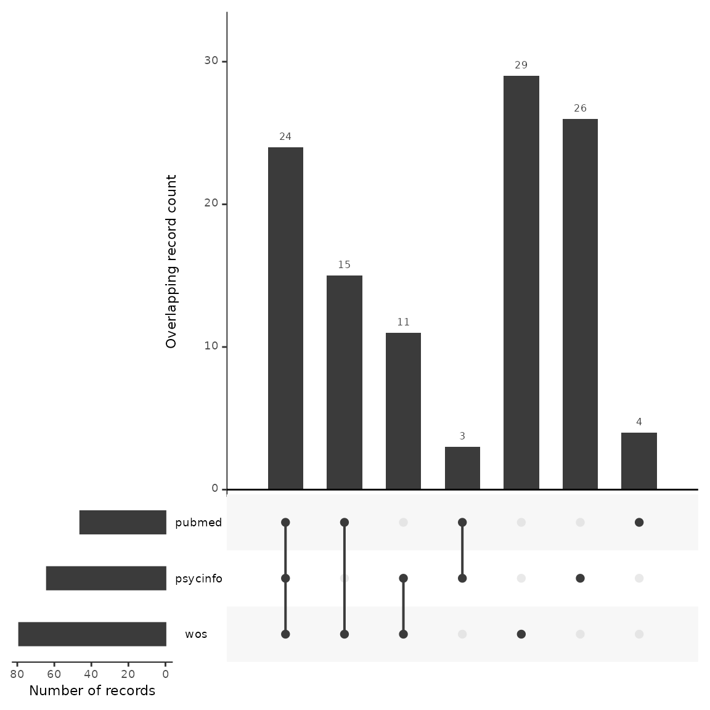
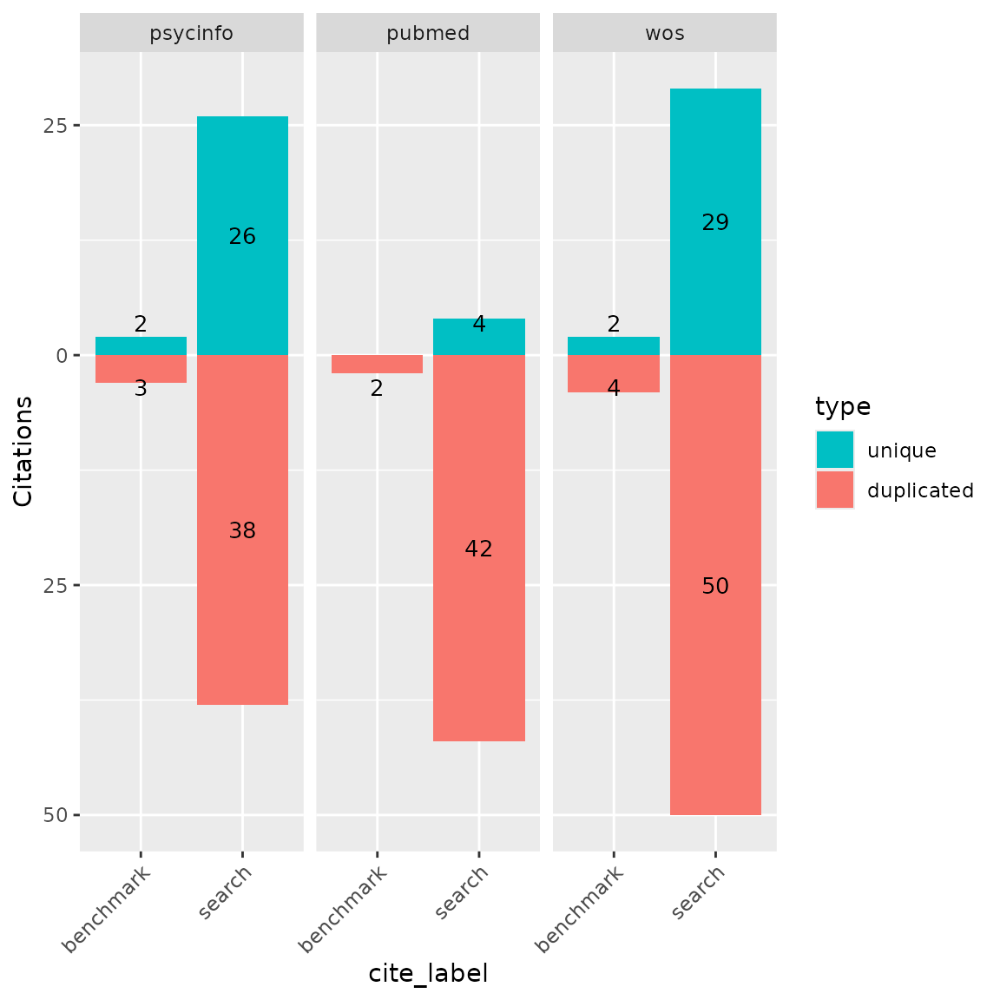

CiteSource - Example: Validating Usefullness of Databases Pre-Screening
2023-01-24
Source:vignettes/citesource_vignette_db-pre-screen_validation.Rmd
citesource_vignette_db-pre-screen_validation.RmdAbout the package
CiteSource provides users with the ability to deduplicate references while maintaining customizable metadata. Instead of the traditional deduplication method where records are removed and only one record is selected to be retained, CiteSource retains each duplicate record while merging metadata into a single main record. This main record maintains user-customized metadata in three fields, “cite_source”, “cite_label” and “tag_naming”. In the merging process, select metadata fields are also automatically compared (currently DOI & Abstract) and the most complete metadata is used in the main record.
About this vignette
In the process of developing search strategies for evidence synthesis, it is standard practice to test different versions of a search in the main database and examine the records gained and lost with changes to the search string and to test different searches against a set of already known relevant studies (i.e., benchmark studies). In this way, the right balance between precision and sensitivity can be acheived prior to screening.
Until now, this within-database testing has been the primary method of pre-screening search validation. With CiteSource, we can now test search strategies across databases, to assess the usefullness of certain databases in a search before finalizing our database set. This adds another layer of pre-screening search validation that can further improve precision/sensitivity. This vignette provides a workflow for testing a search strategie across multiple databases and against a set of benchmark studies.
In this example, we are running a search about lonliness and gambling addiction. We developed a search strategy for PsycInfo, our main database. Now, we’d like to see if searching other databases like Web of Science and PubMed add useful records and help us find more of our benchmark studies.
1. Installation of packages and loading libraries
Use the following code to install CiteSource. Currently, CiteSource lives on GitHub, so you may need to first install the remotes package. This vignette also uses functions from the ggplot2 and dplyr packages.
Import files from multiple sources
Users can import multiple RIS or bibtex files into CiteSource, which the user can label with source information such as database or platform.
#Import citation files from folder
citation_files <- list.files(path= "valid_data", pattern = "\\.ris", full.names = TRUE)
#Print citation_files to double check the order in which R imported our files. This will typically default to alphabetical, but it is worth checking as in the next step, we assign each file to a group based on their order.
citation_files
#> [1] "valid_data/benchmark.ris" "valid_data/psycinfo_64.ris"
#> [3] "valid_data/pubmed_46.ris" "valid_data/WoS_79.ris"
#Read in citations and specify sources. Here we note the sources of our three database searches and then add labels cooresponding to their status as benchmark studies or as a database search.
citations <- read_citations(citation_files,
cite_sources = c(NA, "psycinfo", "pubmed", "wos"),
cite_labels = c("benchmark", "search", "search", "search"),
tag_naming = "best_guess")
#> Import completed - with the following details:
#> file cite_source cite_string cite_label citations
#> 1 benchmark.ris <NA> NA benchmark 13
#> 2 psycinfo_64.ris psycinfo NA benchmark 64
#> 3 pubmed_46.ris pubmed NA benchmark 46
#> 4 WoS_79.ris wos NA benchmark 79Deduplication and source information
CiteSource allows users to merge duplicates while maintaining information in the cite_source metadata field. Thus, information about the origin of the records is not lost in the deduplication process. The next few steps produce the dataframes that we can use in subsequent analyses.
#Deduplicate citations
dedup_results <- dedup_citations(citations, merge_citations = TRUE)
#Get unique citations. This yields a dataframe of all records with duplicates merged, but the originating source information maintained in a new variable called cite_source.
unique_citations <- dedup_results$unique
#Count number of unique and non-unique citations from different sources and labels.
n_unique <- count_unique(unique_citations)
#For each unique citation, determine which sources were present
source_comparison <- compare_sources(unique_citations, comp_type = "sources")Plot heatmap to compare source overlap
Heatmap by number of records
A heatmap can tell us the total number of records retrieved from each database, and can be used to compare the number of overlapping records found in each pair of databases. In this example, we can see that Scopus yielded the highest number of records on gambling harms, and Criminal Justics Abstracts the least.
#Generate source comparison heatmap
plot_source_overlap_heatmap(source_comparison)
Heatmap by percentage of records
Another way of visualizing this is a heatmap with percent overlap. We
can use the plot_type argument to produce a percentage
heatmap as follows. The total number of records appears in gray. The
percentages indicate the share of records in a row also found in a
column. For example, here we see that 67% of the records in Scopus were
also found in PubMed. Conversely, 97% of records in PubMed were found in
Scopus.
#Generate heatmap with percent overlap
plot_source_overlap_heatmap(source_comparison, plot_type = "percentages")
Plot an upset plot to compare source overlap
An upset plot is another way of visualizing overlap and provides a bit more detail about the number of shared and unique records. Here, we can see that Scopus had the most unique records not found in any other database (n=35), and Criminal Justice Abstracts only had one unique record. Six records were found in every database.
#Generate a source comparison upset plot.
plot_source_overlap_upset(source_comparison, decreasing = c(TRUE, TRUE))
Bar plots of unique and shared records
Bar plots can be another way of looking at overlap and uniqueness of
database contributions to a search. We can use the CiteSource
function plot_contributions to plot a bar chart of numbers
of unique and overlapping records. We can also add our benchmark studies
into this chart to view the unique and non-unique contributions of each
database to our benchmark set. In this example….
#Generate bar plot of unique citations PER database and their contribution to the benchmark studies
plot_contributions(n_unique,
center = TRUE,
bar_order = c("search", "Screened", "Final")
)
Analyzing unique contributions
As we do when testing different search strategies in a single
database, we can look at the unique contributions to determine if those
contributions are useful or not. In other words, given the total number
of records the database adds to our search, do the unique contributions
justify the amount of additional screening time that will be required if
we choose to include this database in our final search? Thus, let’s look
more closely at the records that are only found in each database and not
appearing anywhere else. We can make use of the output of the
count_unique function. We use the dplyr function
filter to find the unique records contributed by single
sources. We then use the inner_join function to regain the
bibliographic data by merging on record IDs with the unique_citations
dataframe we generated above in the deduplication process.
#Get unique records from each source and add bibliographic data
unique_psycinfo <- n_unique %>% filter(cite_source=="psycinfo", unique == TRUE) %>% inner_join(unique_citations, by = "duplicate_id")
unique_pubmed <- n_unique %>%
filter(cite_source=="pubmed", unique == TRUE) %>%
inner_join(unique_citations, by = "duplicate_id")
unique_wos <- n_unique %>%
filter(cite_source=="wos", unique == TRUE) %>%
inner_join(unique_citations, by = "duplicate_id")
#To save these dataframes to a csv file for review, use write.csv
#write.csv(unique_pubmed, "unique_pubmed.csv")Search Summary Table
A search summary table can also be useful to assess each database for
unique contributions to a set of benchmark studies and to calculate
their sensitivity and precision scores. The CiteSource function
citation_summary_table produces a useful table containing
these numbers.
#Note: getting an error here: Error in dplyr::summarise(.,
:=(!!comparison_type, “Total”),
dplyr::across(tidyselect::where(is.numeric), :
ℹ The error occurred in group 2: stage = “search”. Caused by error in
across(): ! ‘where’ is not an exported object from
‘namespace:tidyselect’ citation_summary_table(unique_citations,
screening_label = c(“benchmark”))
#Generate search summary table
citation_summary_table(unique_citations, screening_label = c("benchmark"))| Sources | Records | Contribution | Sensitivity | Precision | |
|---|---|---|---|---|---|
| total | unique | unique | |||
| search | |||||
| wos | 79 | 40 | 26.67% | 52.67% | — |
| psycinfo | 64 | 64 | 42.67% | 42.67% | — |
| pubmed | 46 | 7 | 4.67% | 30.67% | — |
| Total1 | 150 | 111 | 74.00% | — | — |
| benchmark | |||||
| wos | 6 | 4 | 2.67% | 100.00% | 7.59% |
| pubmed | 2 | 0 | 0.00% | 33.33% | 4.35% |
| Total1 | 6 | 4 | 66.67% | — | 4.00% |
Included fields:
|
|||||
| 1 After deduplication | |||||
In summary
We can use CiteSource to evaluate the usefulness of different databases to an overall search strategy before screening. In this example, we found that both PsycInfo and Web of Science made unique contributions to our benchmark studies and both had a significant proportion of unique records compared to the other databases. On the otherhand, PubMed did not contribute any unique records to our benchmark studies, and mostly overlapped with PsycInfo and Web of Science. This provides us with some evidence to suggest that searching PubMed may not be an effective database for this topic.